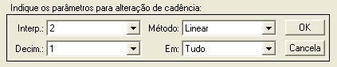
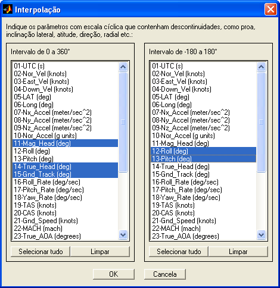
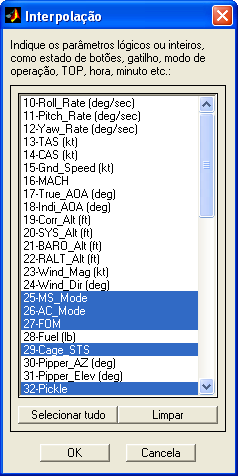
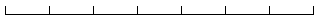
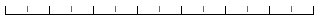
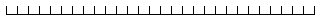
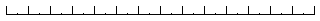
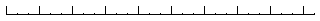
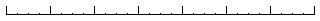

|
Menu
Funções |
|
Alterar
Cadência
Essa função
permite alterar a cadência das observações da
matriz de dados através de interpolação e decimação.
Clique no menu
“Funções ► Filtragem e reamostragem ...
► Alterar cadência”.
A Caixa de
Diálogo solicitará que o usuário indique os
parâmetros para alteração de cadência:

● No campo “Interp.”,
indique o fator de interpolação, de
● No campo
“Método”, indique o método de interpolação
desejado. Os métodos disponíveis são:
-
Linear;
-
Vizinho;
- Spline; e
-
Cúbico.
● No campo “Decim.”, indique
o fator de decimação,
de
● No campo
“Em”, indique em que parte da matriz de
dados deseja aplicar a operação. As opções são:
|
Nota: Não é
recomendado alterar a cadência apenas em um intervalo da matriz de
dados, pois a taxa de amostragem ficará heterogênea. |
Ao clicar “OK”,
o usuário deverá confirmar a operação:
Parâmetros com escala cíclica, como ângulos de Euler, podem ser incorretamente interpolados entre observações que apresentam descontinuidade (por exemplo, proa de 359 para 0° seria interpolado pelo meio da escala, quando deveria manter o salto para o início da escala). Para evitar esse efeito, o usuário deve indicar quais parâmetros possuem essa característica (em graus):

Os parâmetros com escala cíclica são transformados em parâmetros contínuos para a interpolação e então retornados para a escala original.
Caso haja algum parâmetro com escala cíclica em radianos, converta-o para graus antes de realizar a interpolação.
Parâmetros lógicos (como estado de acionamento botões ou sistemas) ou inteiros (como TOP, modo de operação, hora, minuto), podem ser incorretamente interpolados entre observações que apresentam saltos (por exemplo, de 0 a 1 surgiriam valores intermediários). Para evitar esse efeito, o usuário deve indicar quais parâmetros possuem essa característica:

Ao prosseguir,
toda a matriz DADOS será atualizada.
|
Nota: É recomendado
salvar as matrizes de trabalho antes de realizar a operação, pois as
alterações são profundas e não é possível desfazê-las. |
Lógica da
Operação
A interpolação
é feita acrescentando-se pontos
intermediários na matriz DADOS, distribuídos uniformemente e
interpolados
segundo o método escolhido. O fator indica o quanto a matriz será
aumentada, ou
seja, fator 2 insere um ponto, fator 3 insere 2 pontos, e assim por
diante.
|
Fator |
Representação
da Cadência |
|
1 (sem
alteração) |
 |
|
2 |
 |
|
3 |
|
|
4 |
|
|
|
|
Os parâmetros com escala cíclica são transformados em parâmetros contínuos, interpolados e então retornados para a escala original.
A decimação é feita coletando-se cada n-ésima observação e descartando-se as demais. Essa operação é realizada após a operação de interpolação.
|
Fator |
Representação
da Cadência |
|
1 (sem
alteração) |
 |
|
2 |
 |
|
3 |
 |
|
4 |
 |
|
|
|
|
|
Reordenar
dados |
Reamostrar
|
|